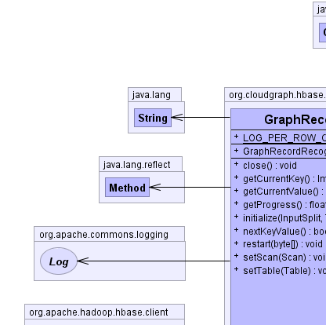
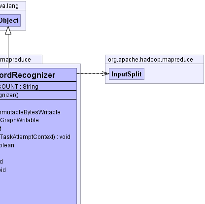
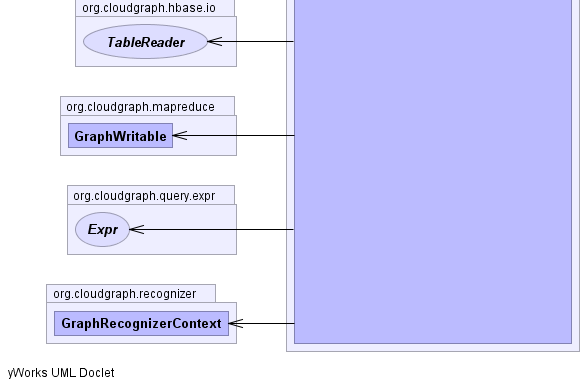
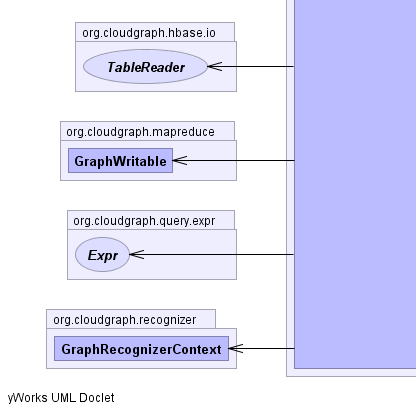
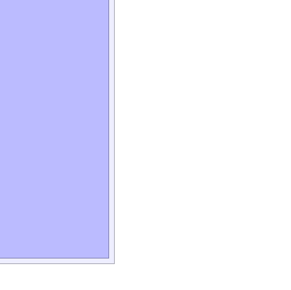

public class GraphRecordRecognizer
extends java.lang.Object
TableSplit,
assembling data graphs based on the detailed selection criteria within a
given query.
Partially or fully assembled data graphs may be passed to binary expression
recognizer and potentially screened from client GraphMapper
extensions, potentially eliminating business logic dedicated to identifying
specific records.
The recognizer uses a binary expression tree assembler which constructs an operator precedence map, then visits (traverses) the given predicate expression syntax tree depth-first using an adapted shunting-yard algorithm and assembles a resulting binary tree structure with expression nodes specific for detecting i.e. recognizing a data graph. In typical usage scenarios, a single expression tree is assembled once, and then used to evaluate (recognize) any number of data graphs.
The adapted shunting-yard algorithm in general uses a stack of operators and operands, and as new binary tree nodes are detected and created they are pushed onto the operand stack based on operator precedence. The resulting binary expression tree reflects the syntax of the underlying query expression including the precedence of its operators.
GraphRecognizerSyntaxTreeAssembler,
GraphRecognizerContext,
GraphWritable,
HBaseGraphAssembler|  |  |
|  | |
|  |  |
| Modifier and Type | Field and Description |
|---|---|
static java.lang.String |
LOG_PER_ROW_COUNT |
| Constructor and Description |
|---|
GraphRecordRecognizer() |
| Modifier and Type | Method and Description |
|---|---|
void |
close()
Closes the split.
|
org.apache.hadoop.hbase.io.ImmutableBytesWritable |
getCurrentKey()
Returns the current key.
|
GraphWritable |
getCurrentValue()
Returns the current value.
|
float |
getProgress()
The current progress of the record reader through its data.
|
void |
initialize(org.apache.hadoop.mapreduce.InputSplit inputsplit,
org.apache.hadoop.mapreduce.TaskAttemptContext context)
Not done in constructor to allow for extension.
|
boolean |
nextKeyValue()
Positions the record reader to the next recognized record, scanning forward
past any unrecognized records, not passing these records to
Mapper clients. |
void |
restart(byte[] firstRow)
Restart from survivable exceptions by creating a new scanner.
|
void |
setScan(org.apache.hadoop.hbase.client.Scan scan)
Sets the scan defining the actual details like columns etc.
|
void |
setTable(org.apache.hadoop.hbase.client.Table table)
Sets the HBase table.
|
public static final java.lang.String LOG_PER_ROW_COUNT
public void restart(byte[] firstRow)
throws java.io.IOException
java.io.IOException - When restarting fails.firstRow - The first row to start at.public void setTable(org.apache.hadoop.hbase.client.Table table)
table - The root Table to scan.public void setScan(org.apache.hadoop.hbase.client.Scan scan)
scan - The scan to set.public void initialize(org.apache.hadoop.mapreduce.InputSplit inputsplit,
org.apache.hadoop.mapreduce.TaskAttemptContext context)
throws java.io.IOException,
java.lang.InterruptedException
java.io.IOException - , InterruptedExceptionjava.lang.InterruptedExceptionpublic void close()
public org.apache.hadoop.hbase.io.ImmutableBytesWritable getCurrentKey()
throws java.io.IOException,
java.lang.InterruptedException
java.io.IOExceptionjava.lang.InterruptedException - When the job is aborted.public GraphWritable getCurrentValue() throws java.io.IOException, java.lang.InterruptedException
java.io.IOException - When the value is faulty.java.lang.InterruptedException - When the job is aborted.public boolean nextKeyValue()
throws java.io.IOException,
java.lang.InterruptedException
Mapper clients.java.io.IOException - When reading the record failed.java.lang.InterruptedException - When the job was aborted.true if there was another record.public float getProgress()
CloudGraph® is a registered trademark of TerraMeta Software, Inc. Copyright © 2014 - All Rights Reserved.